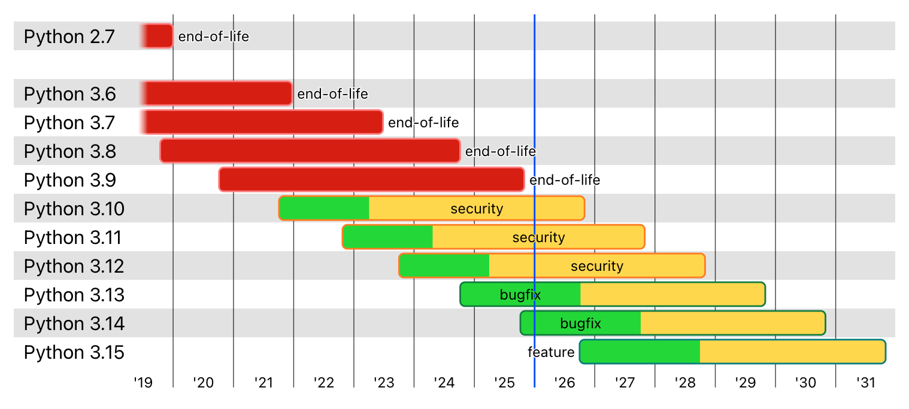

Python3 概要
Python は、解釈性、コンパイル性、対話性、オブジェクト指向を兼ね備えた高水準のスクリプト言語です。
Python の設計は可読性が非常に高く、他の言語と比べて英語のキーワードを多用し、他の言語の一部の句読点の代わりに、他言語よりも特徴的な構文構造を持っています。
Python は解釈型言語です：これは、開発プロセスにコンパイルの段階がないことを意味します。PHP や Perl 言語に似ています。
Python は対話型言語です：これは、Python プロンプトで>>>コードを直接実行できることを意味します。
Python はオブジェクト指向言語です:これは、Python がオブジェクト指向スタイル、つまりコードをオブジェクトにカプセル化するプログラミング技術をサポートしていることを意味します。
Python は初心者のための言語です：Python は初級プログラマーにとって素晴らしい言語であり、簡単なワードプロセッシングから WWW ブラウザ、ゲームに至るまで、幅広いアプリケーション開発をサポートしています。

Python の開発史
Python は、1980 年代末から 1990 年代初頭にかけて、Guido van Rossum によってオランダ国立数学・コンピュータサイエンス研究所で設計されました。
Python 自体も、ABC、Modula-3、C、C++、Algol-68、SmallTalk、Unix shell、その他のスクリプト言語など、多くの他の言語から発展したものです。
Perl 言語と同様に、Python のソースコードも GPL（GNU General Public License）に従っています。
現在、Python はコア開発チームによって保守されており、Guido van Rossum はその進歩を導く上で今もなお極めて重要な役割を担っています。
Python 2.0 は 2000 年 10 月 16 日にリリースされ、完全なガベージコレクションの実装が追加され、Unicode がサポートされました。
Python 3.0 は 2008 年 12 月 3 日にリリースされ、このバージョンは以前の Python ソースコードと完全には互換性がありません。ただし、多くの新機能は後に旧バージョンの Python 2.6/2.7 にも移植されました。
Python 3.0 は、しばしば Python 3000 または略して Py3k と呼ばれます。これは Python の初期バージョンと比較して大きなアップグレードです。
Python 2.7 は最後の Python 2.x バージョンと定められており、Python 2.x 構文に加えて、Python 3.1 の一部の構文もサポートしています。
Python の特徴
1. 学習のしやすさ：Python はキーワードが比較的少なく、構造が単純で、明確に定義された構文があるため、学習がより簡単です。
2. 読みやすさ：Python のコードはより明確に定義されています。
3. 保守のしやすさ：Python の成功は、そのソースコードが非常に保守しやすいことです。
4. 広範な標準ライブラリ：Python の最大の利点の 1 つは、豊富なライブラリであり、クロスプラットフォームで、UNIX、Windows、Macintosh との互換性が優れています。
5. 対話モード：対話モードをサポートしており、ターミナルからコードを入力して実行し、結果を得ることができる言語で、コード断片を対話的にテストおよびデバッグできます。
6. 移植性：オープンソースの特性により、Python は多くのプラットフォームに移植（つまり動作させること）されています。
7. 拡張性：高速に動作する重要なコードが必要な場合や、公開したくないアルゴリズムを書きたい場合は、その部分のプログラムを C または C++ で作成し、自分の Python プログラムから呼び出すことができます。
8. データベース：Python は主要な商用データベースすべてのインターフェースを提供します。
9. GUI プログラミング：Python は GUI をサポートしており、多くのシステムコールを作成して移植することができます。
10. 組み込み可能性:Python を C/C++ プログラムに埋め込んで、プログラムのユーザーに「スクリプト化」の能力を提供できます。
Python の応用
- YouTube - 動画共有サイト
- Reddit - ソーシャル共有サイト
- Dropbox - ファイル共有サービス
- 豆瓣网（Douban）- 書籍、レコード、映画などの文化製品の情報データベースサイト
- 知乎（Zhihu）- Q&A サイト
- 果壳（Guokr）- 科学技術全般をテーマにしたサイト
- Bottle - Python 製マイクロ Web フレームワーク
- EVE - オンラインゲーム EVE は Python を多用して開発されています
- Blender - Python をモデリングツールや GUI 言語として使用するオープンソースの 3D 描画ソフトウェア
- Inkscape - オープンソースの SVG ベクターグラフィックエディタ。
- ...
Python のバージョン進捗
次の図は、Python の過去のバージョンと将来のバージョンのメンテナンスおよびリリース時期を示しています：

その他の拡張